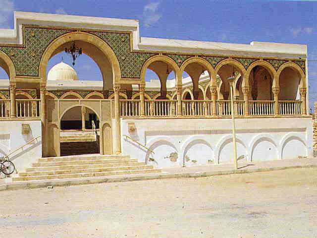

Mosquée Sidi Boulbaba
Cette mosquée historique abrite le mausolée de Sidi Boulbaba, compagnon du prophète Mohammed et figure vénérée. Lieu de pèlerinage important, elle se distingue par son architecture ottomane et son rôle spirituel central dans la région de Gabès.